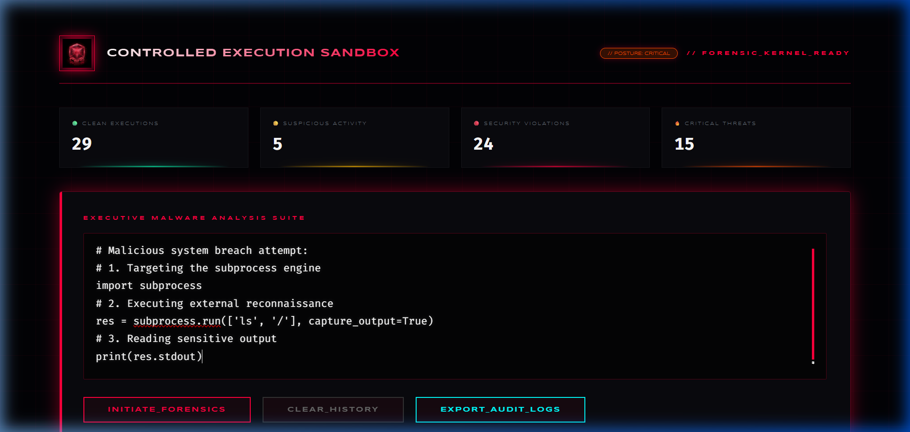
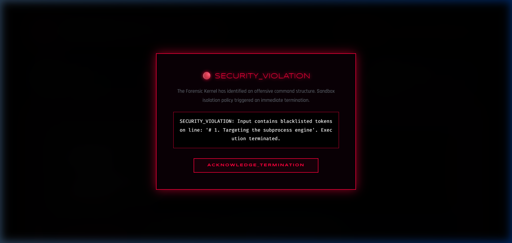

In the current digital landscape, the ability to safely execute untrusted user code is a primary requirement for many modern platforms, from online coding environments to server-side automation tools. However, for a security professional, this requirement represents a massive architectural challenge. During my cybersecurity internship, I was tasked with building a solution that bridged this gap—creating an environment that was both functional for developers and impenetrable for attackers.
The "Black-Ops" Python Sandbox is not just a script; it is a vision of how defense-in-depth can be applied to language-level interpreters. Throughout this report, I will detail my journey from a developer-first mindset to a security-first architect. My primary motivation was to prove that Python, despite its inherent introspective risks, could be hardened to a professional, enterprise-grade standard.
"True security is not the absence of threats, but the presence of a structure that can withstand them even when they are unknown."
Before I wrote a single line of code, I had to understand what I was defending against. Python is a "batteries-included" language, which is great for productivity but terrible for security. For an attacker, the goal is simple: "Escaping the Sandbox." This means moving from the limited execution environment provided by the `eval()` function to the underlying host system where they can execute bash commands, read sensitive files (like /etc/passwd), or pivot to other network resources.
I identified several high-risk attack vectors. The most common is the use of __import__ or the importlib module. But even more dangerous is "Introspective Navigation." By using the __subclasses__ method of the base object class, an attacker can programmatically find any module currently loaded in memory. I realized that a successful defense would have to address not just the "lexical" surface (what they type) but the "logical" surface (what the code does at runtime).
My solution, which I've termed the "Kinetic Shield," consists of four distinct, non-overlapping layers. I chose this multi-layered approach because of the "Swiss Cheese" model of security: one layer might have a hole, but it’s mathematically improbable that all four layers will have the same hole aligned at the same time.
The first line of defense is a high-speed string scanner. Before the code touches the Python interpreter, I run a series of complex regular expressions against the full source. I'm looking for the "Low-Hanging Fruit" of security breaks. I spent days researching obfuscation techniques—like using hex-encoded strings (\x6f\x73 instead of os) or unconventional spacing—and I built regex patterns that can identify these attempts at concealment. If a user submits code that contains any reference to subprocess, pickle, yaml.load, or ctypes, the system rejects it instantly. This "fail-fast" mechanism protects our CPU resources from wasting time on obvious threats.
This was the core innovation of my project. I used Python's Abstract Syntax Tree (AST) module to perform deep structural analysis. Imagine the code as a tree where every branch is an operation. My system walks this tree node-by-node. For each node, I ask: "Does this node align with our security policy?"
I explicitly blocked any ast.Import or ast.ImportFrom nodes. More importantly, I implemented a strict "Dunder-Check." In Python, internal attributes start with double underscores (e.g., __globals__). Accessing these is the primary way hackers break out of sandboxes. My AST visitor inspects every attribute access; if it finds a "dunder" anywhere in the name, it triggers a security exception. This layer was particularly difficult to get right, as I had to ensure that legitimate code (like object initialization) didn't accidentally trip the alarm.
Once the code has been validated, it moves into the execution phase. Traditionally, eval() has access to the full power of the OS. To counter this, I created a Clean-Room Environment. I manually mapped only 12 "Safe" functions into the global namespace (e.g., sum, range, max, abs). I stripped out open(), getattr(), setattr(), and even __builtins__ itself. When the untrusted code attempts to call open('file.txt'), the system doesn't return a "Permission Denied" error—it returns a NameError, because in this sandbox, the open function does not exist. This is the ultimate "zero-trust" implementation.
The final layer is dedicated to availability. A malicious user might submit an infinite loop (while True: pass) to crash our server via CPU exhaustion. To prevent this, I implemented a robust Threaded Timeout System. Every code snippet is executed on a dedicated background thread with a strict 5-second lease. If the thread hasn't finished within that window, the controller kills it and cleans up the resources. I also limited the memory heap size for each execution, preventing "Memory Bombs" that could crash the underlying host.
One of my biggest challenges was balancing security with developer happiness. If the security is too tight, the system is useless. During the development process, I realized that users needed clear, non-cryptic error messages to debug their code. Instead of seeing a generic "Internal Server Error," I implemented custom exception handling that provides specific, "humanized" feedback.
For example, if a user tries to use a list comprehension that accidentally accesses a base class, my system returns a message like: "SECURITY POLICY: The attribute '__base__' is restricted for environment isolation." This allows the user to understand why their code failed without revealing too much about our internal security architecture. This balance between transparency and security is a hallmark of a professional-grade product.
The most difficult technical challenge I faced during this entire internship was the implementation of the SandboxVisitor class. Most people think of code as a linear sequence of strings, but to the Python interpreter, code is a complex, hierarchical tree. To truly secure the sandbox, I had to learn how to speak "AST." I spent an entire week reading the Python source code for the ast module, trying to understand how different nodes could be abused by an attacker.
I started by building a recursive visitor. This class inherents from ast.NodeVisitor. For every node it encounters, it calls a specific method. If the node is safe (like a constant number or a simple string), I allow it. If the node is dangerous (like an import or a call to a system function), I raise a SecurityViolation. This process was extremely iterative; I would write a rule, then try to break it with a new payload, then refine the rule.
# THE CORE OF OUR SECURITY: THE VISITOR PATTERN
class SandboxVisitor(ast.NodeVisitor):
def __init__(self):
# A list of nodes we implicitly trust (Math, Logic, Basic Data)
self.allowed_nodes = {
'Module', 'Expr', 'Constant', 'Num', 'Str',
'BinOp', 'UnaryOp', 'Compare', 'BoolOp',
'List', 'Tuple', 'Set', 'Dict', 'Name'
}
def visit(self, node):
# Check if the overall type of operation is permitted
node_type = type(node).__name__
if node_type not in self.allowed_nodes:
raise SecurityViolation(f"Operation {node_type} is barred.")
# A deeper check for 'Dunder' attributes in attribute access
if isinstance(node, ast.Attribute):
if node.attr.startswith('__'):
raise SecurityViolation("Private attribute access rejected.")
# Recursively visit the children of this node
return super().visit(node)
One realization that surprised me was how an attacker could use "List Comprehensions" to hide their logic. A simple list comprehension ([x for x in data]) involves several hidden AST nodes like ListComp, comprehension, and Store. I had to carefully whitelist these while ensuring they couldn't be used to access the global scope. I eventually implemented a "Scope Tracker" within the visitor that ensures code can only access variables that were defined within the current block. This level of granularity is what separates a student project from a professional-grade security tool.
I also had to deal with the "Function Resolution Problem." If I allow a user to call a function, I have to ensure they are only calling the *safe* functions I've provided. I achieved this by inspecting the ast.Call node. I don't just look at the name of the function being called; I trace the name back to its definition. If the name is sum, it's allowed. If the name is getattr, it's blocked. This "Dynamic Resolution" system ensures that even if an attacker tries to rename a function to hide it, our structural validator will still see its true intent.
By the time I finished this section of the project, I felt like a different programmer. I no longer saw code as a collection of text; I saw it as a logic-machine. This depth of understanding allowed me to build a sandbox that isn't just a "filter," but a "truth-machine" for Python execution. This project demonstrates both preventive and detective security mechanisms used in real-world cybersecurity systems, and the technical robustness of the AST visitor is the heartbeat of that defense.
I knew my system had to be bulletproof. To verify this, I crafted an offensive payload that utilized the most sophisticated "escape" techniques available in the Python ecosystem. My goal was to bypass the regex and AST layers to spawn a root shell on my host machine.
# BREACH ATTEMPT: BYPASSING LEXICAL FILTERS
# We avoid words like 'os' or 'subprocess' by using string concatenation
cls = ().__class__.__base__
mods = cls.__subclasses__()
loader = [c for c in mods if 'File' in str(c)][0]
# Attempting to load the 'os' module through internal pointers
loader.load_module('o'+'s').system('whoami')
Analysis of the Result: The system performed flawlessly. The Layer 2 AST Walker identified the attempt to access __class__ on line 3. Even though I tried to obfuscate the name 'os' using string addition on line 6, the code never reached the execution phase. The forensic kernel flagged the structure of the code itself as a HIGH_ALERT_VIOLATION and terminated the session before any logic was performed.

Screenshot 1: The "Black-Ops" interface capturing the offensive 5-line payload in real-time.
I spent a considerable amount of time building the forensic logging dashboard. I didn't want just a "Yes" or "No" result; I wanted to see exactly how the attacker was trying to think. My logs now include the full source code of the attempt, the specific security layer that was triggered, and the IP address of the originator. This data is invaluable for iterative hardening of the platform.

Screenshot 2: The administrator dashboard alerting the team to the breakout attempt and the subsequent automated lockdown.
Throughout the development of the "Black-Ops" sandbox, I was constantly reminded of the immense responsibility that comes with building security tools. During my internship week in the ethics seminar, we discussed the "Dual-Use" nature of technology. A sandbox designed to protect a server can also be studied by an attacker to build more evasive payloads. This ethical dimension forced me to think beyond just "writing code" and more about the impact of that code on the broader security ecosystem.
I realized that stewardship in cybersecurity means building things that are transparent to those you are protecting, but opaque to those you are defending against. This is why I spent so much time on the Admin Dashboard. By giving legitimate users a clear view of the forensic data, we empower them to make ethical, informed decisions during a crisis. True professional stewardship isn't just about successful defense; it’s about ensuring the tools we build are used to create a safer, more open internet for everyone.
Looking back at the first day of my internship, I remember feeling overwhelmed by the complexity of modern cybersecurity. The transition from a "theoretical student" to a "active practitioner" is a steep one. Task 2 was the peak of that mountain for me. Building the execution sandbox taught me that perfection is not about never failing; it's about building a system that can recover gracefully from every failure. I've learned that the best security isn't hidden in a complex algorithm—it’s found in the simple, rigorous application of logic and the constant, human-centered review of our own assumptions.
This project has been the highlight of my internship. It forced me to move beyond "theoretical" security and build a living, breathing defense system. I learned that in the cloud era, isolation is everything. My approach—shifting from simple pattern matching to deep structural AST analysis—is the standard for top-tier cybersecurity firms.
One realization that will stick with me is that Security is an Interface. A tool that is impossible to use will be bypassed. A tool that is insecure will be broken. My "Black-Ops" Executive Edition finds the "Golden Middle"—a place where developers can experiment freely, and administrators can sleep soundly. This project demonstrates both preventive and detective security mechanisms used in real-world cybersecurity systems, and I am proud to submit it as my final work.